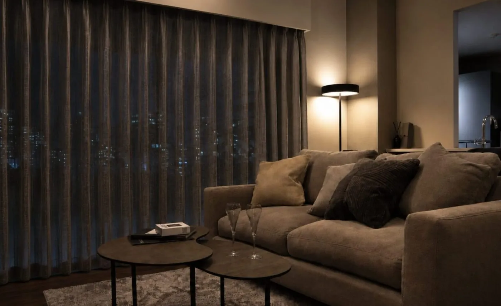
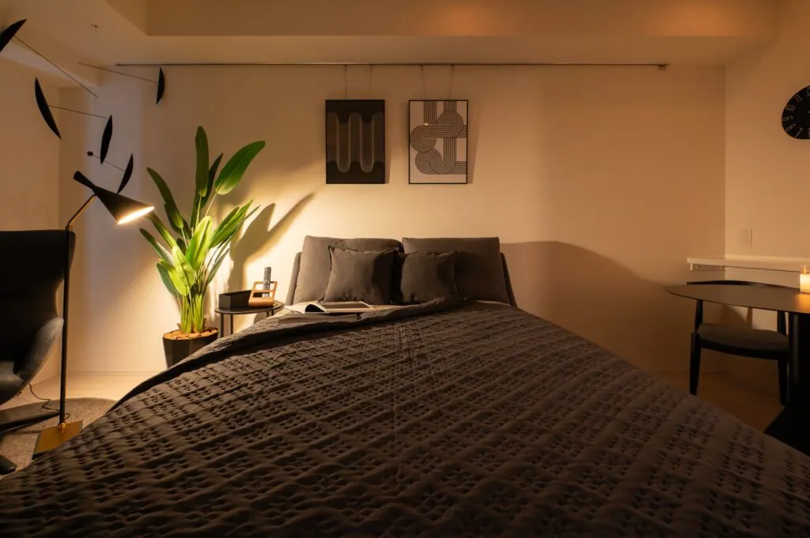
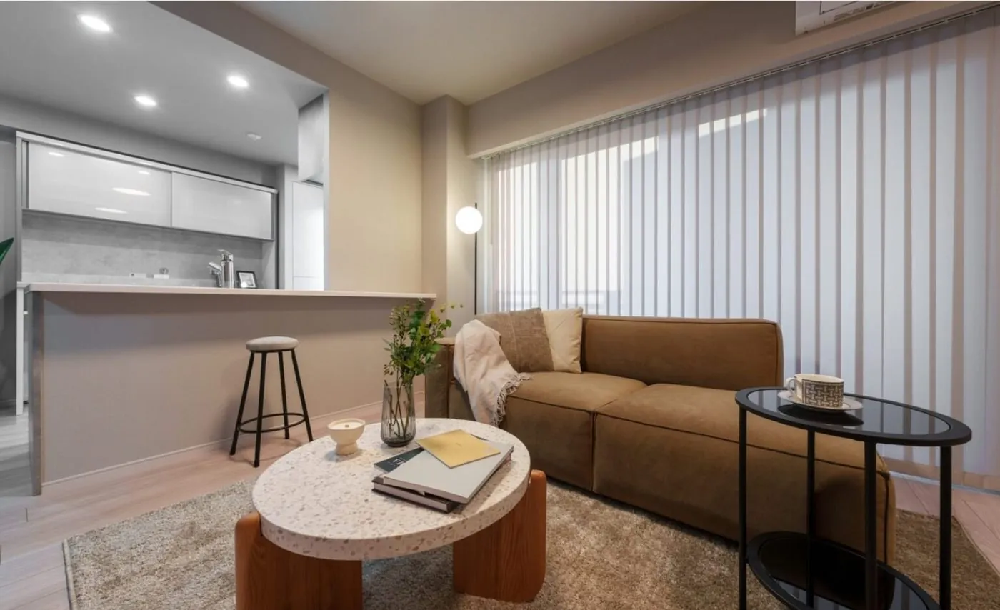

身体を預ける家具。
仕事を終えて腰を下ろすソファ。食事や読書を楽しむ椅子。見た目だけでなく、過ごし方とサイズに合う家具を選びます。

INTERIOR, MADE FOR YOU.
インテリアは、自己投資。
家具・カーテン・照明で、自分を整える住まいへ。
INTERIOR COORDINATE / 初回相談無料
高級家具を、
お得に。
採寸・選定・設置まで、
一貫してお任せ。
コーディネート実績150件突破
THE CONCEPT
住まいにはこだわった。
ソファも、テーブルも、自分で選んだ。
それでも、部屋全体で見るとしっくりこない。
家具のサイズ。照明の高さ。色と素材の重なり。
ひとつずつではなく、空間ごと整える。
nicomadeのインテリアコーディネートを、
自分らしく暮らしたい男性へ。
YOUR RECOVERY HOME
FURNITURE. CURTAINS. LIGHTING.
家具・カーテン・照明・レイアウトまで。
高級家具をお得に取り入れながら、部屋全体のつながりまで提案します。
仕事を終えて腰を下ろすソファ。食事や読書を楽しむ椅子。見た目だけでなく、過ごし方とサイズに合う家具を選びます。
窓の大きさ、外からの視線、取り込みたい光。生地や色、透け感まで考えて、部屋の雰囲気に合う窓まわりを提案します。
食事をする灯り、くつろぐ灯り。ペンダントやフロアライトを組み合わせ、時間と過ごし方に合う明かりを考えます。
採寸・選定・設置まで、空間づくりを一貫してお任せ。
COORDINATE WORKS
コーディネート実績150件突破。nicomadeが手がけた空間をご紹介します。

LDK・賃貸マンション

1ROOM・賃貸マンション

1LDK・賃貸マンション
YOUR INVESTMENT
nicomadeのインテリアコーディネート料金
デザイン費 / 1部屋
45,000円〜（税別）
レイアウト・家具リスト・提案書をご用意。
家具の発注から納品・設置まで対応します。
家具代・納品設置等の費用は、別途お見積り。
FROM IDEA TO ROOM
公式LINEから、相談のためのフォームに回答。
好み、間取り、家具の予算。今の部屋の写真や参考画像を見ながら、希望を共有します。
コーディネートの提案から、家具の手配・納品・設置へ。ご依頼の内容に合わせて進めます。
QUESTIONS
賃貸も対応しています。原状回復を前提に、置き家具・照明・ファブリックを中心とした提案が可能です。
家具を購入する前のご相談も歓迎しています。間取り図・お部屋の写真・好みの参考画像をご用意いただくと、具体的にお話しできます。
ご提案・打ち合わせはオンラインで全国対応。現地の採寸・納品は関東1都6県と関西を中心に対応しています。その他の地域についてはご相談ください。
YOUR NEXT MOVE
家具も、カーテンも、照明も。
nicomadeと、自分を整える一室へ。
初回相談無料・オンライン対応
LINE登録後、フォームへの回答へお進みください。